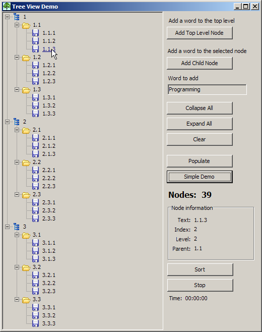
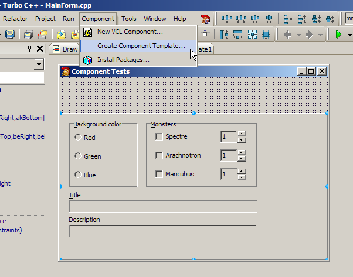
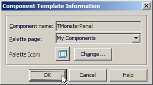
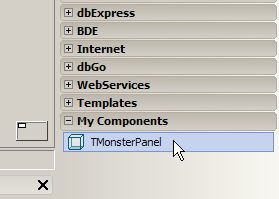
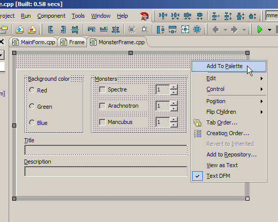
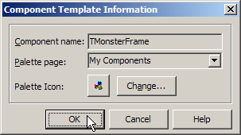
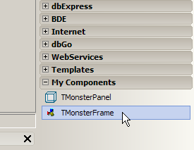

Session #8
First up is another very powerful component, the TTreeView. This is the primary component used in Windows Explorer. It's used whenever you want to represent a hierarchy or parent-child relationship. There's not a lot on this page, but there is a ton of stuff going on in the project that you can see by downloading the code.
|  |
|
I also spent some time demonstrating how the IDE provides a very productive environment for GUI development. The IDE may not be up to par with Microsoft's debugger and project manager, but the GUI-related tools are pretty nice. These screenshots and code samples won't really show that.
The first thing to understand is a Component Template. I created a simple program that had some components (group boxes, radio buttons, edit boxes, spin edits, labeled edits) on a panel. I added event handlers to the components so that they did something when the user clicked or typed. You can run the application and look at the code to see what's going on. The code is trivial (which seems to be a recurring theme with a good RAD tool).
After creating the interface, select the panel, and from the main menu in the IDE choose "Component | Create Component Template...". Give the component a name (e.g. TMonsterPanel) and choose which page in the component palette to put it (e.g. My Components). Optionally, you can choose a custom icon if you'd like. Press OK and you'll see a new My Components category created and a new component in that category named TMonsterPanel. It doesn't get much easier than that to reuse components.
| Create component template | Name the component | New category/component | ||
|---|---|---|---|---|
|  |  |  |
Once you've created the component template, create a new application ("File | New | VCL Forms Application - C++ Builder"), and drop the TMonsterPanel on the form. Press F9 to compile, link, and run, and you'll see all of the functionality from the component template works in the application. (Again, it doesn't get much easier than this.)
Somtimes you need something more powerful than a simple component template. The component to use is TFrame and it's a very powerful component. Think of it as a light-weight TForm component. It's a container component that is used to hold other visual components for flexible component and code reuse. One limitation of the component template demonstrated above was that only event handling code was reused. If you had helper functions or classes that were needed by the event handlers, that code would have to be copied manually to each new application. That's not a good form of code reuse. Frames allow you to include not only the components and their associated event handlers, but any other code (functions, classes, data, etc.) that might be needed.
To see how this works, create a new VCL Application like you did above ("File | New | VCL Forms Application - C++ Builder"). Next, add a new frame to the project, "File | New | Other...". In the tree view on the left select "C++ Builder Files", in the right pane click on "Frame", and then click OK. You'll have what looks like a Form, without any borders. This is what a TFrame is. Now, drop a TMonsterPanel (that you created above) onto the frame. Essentially, you're done!
Well, there are a couple of things that need to be modified since applications are going to use the TMonsterFrame instead of the TMonsterPanel. If you look at the code from the application above that used the component template, TMonsterPanel, you'll see that the event handlers change attributes of the main form (this->Color and this->Caption). This works fine because the this pointer is the main form. However, in the TMonsterFrame, the this pointer refers to the TFrame itself, not the main form (TForm) that contains the frame. (Think about it.)
Since we want to be able to use the TMonsterFrame with any form of any application, we need to tell the frame what form it should work with. This is easily done by adding a public property or field to the TMonsterFrame class. This field will simply be this:
and in the application where the TMonsterFrame is used, add this to the FormCreate method:public: TForm *theMainForm;
Now, the frame will work for any application. See the code for details. (It's all trivial.)frameMonster->theMainForm = this; // assumes the name of the frame is frameMonster
In order to make the new TMonsterFrame easily available for other applications, you should add it to the component palette. This is done similarly to how you added a component template. For frames, right click on the frame and choose "Add To Palette". You will be prompted for a name and a component page where to put it.
| Add frame to component palette | Name the component | New category/component | ||
|---|---|---|---|---|
|  |  |  |
Exercises